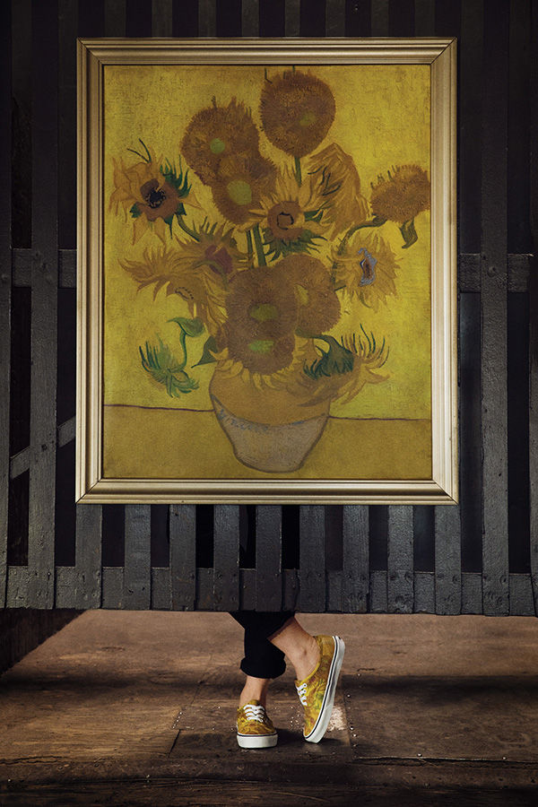
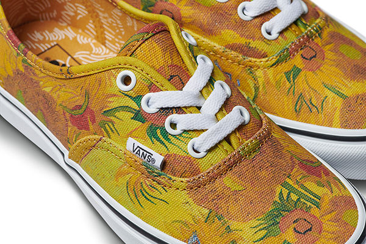
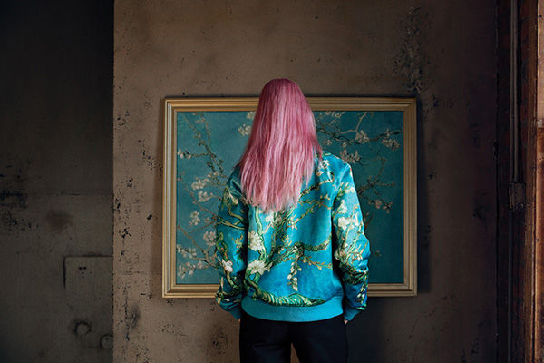
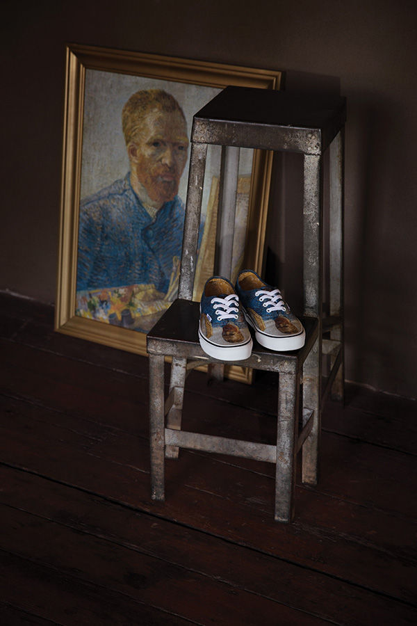
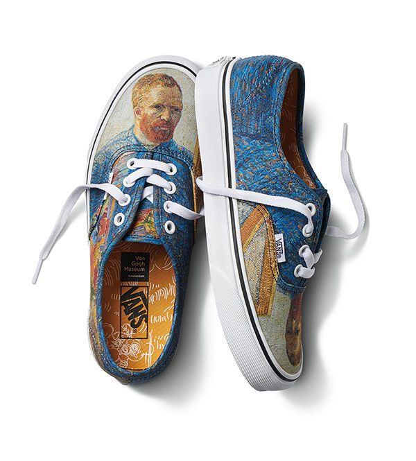
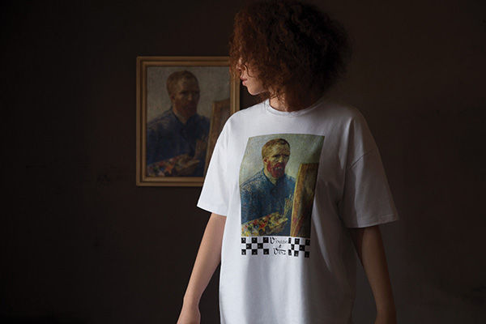
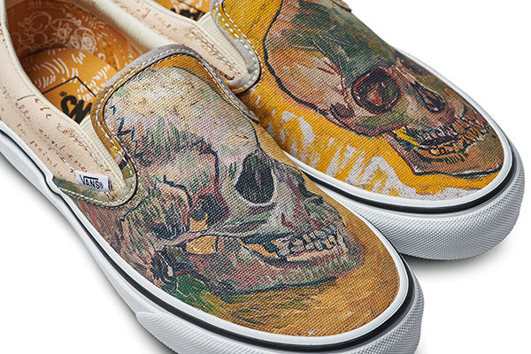
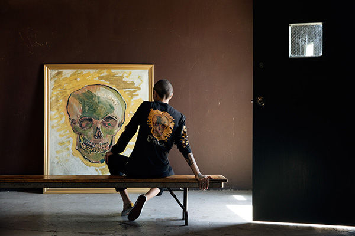

VANS PARTNERS WITH THE VAN
GOGH MUSEUM AMSTERDAM
VAN GOGH’S LEGACY AND COLLECTION OF ART 
SIGN UP FOR NEWS & GET 15% OFF
By clicking the "Sign up" button, I confirm I am over 13 years of age.
Sign me up for adidas emails, featuring exclusive offers, latest product info,
news about upcoming events, and more.
See our adidas privacy policy
for details. Selected products may be excluded
from the 15% off promotion.
Terms & Conditions Privacy Policy © 2018 ShoesFL Group
Vans and the Van Gogh Museum proudly partner to present an artfully designed collection
utilizing Van Gogh masterpieces across iconic Vans Classics and premium apparel silhouettes,
available worldwide August 3. The Van Gogh Museum will dedicate a portion of its profits
from this project to the preservation of Vincent van Gogh’s legacy and collection of art;
keeping it accessible for future generations.
Vincent van Gogh is arguably one of the most famous and influential post-impressionist
painters in the history of western art. Van Gogh is most noted for his work that evokes beauty,
emotion and color bringing his personal expression to life through his art. With over 2,100 pieces
of artwork produced from his decade long career, Vans worked closely with the Van Gogh Museum
team to select four main bodies of work that speaks to the creative ethos of Vans’ design as well as
personal moments from the artist familial history. Skull, Almond Blossom, Sunflowers and Van Gogh’s
self-portrait are celebrated through an extensive Vans collection, showcasing some of Van Gogh’s
most revered artwork in a new way.
“We are delighted with the Vans x Van Gogh Museum collection, as it ties in with our mission to
make the life and work of Vincent van Gogh accessible to as many people as possible in order to
enrich and inspire them”, said Adriaan Dönszelmann, Managing Director of the Van Gogh Museum.
“By uniting Van Gogh’s iconic artworks with iconic Vans styles, our partnership brings Vincent’s art
“Off The Wall” and into the world to a new audience outside the museum.”
When Van Gogh began to formally study art, he centered his focus around color theory through a
series of skeletons that captured shade and light in an irreverent and dark expression. These studies
have come to life across the vamps of the Classic Slip-On, long sleeve tee, hoodie and hat with Van
Gogh’s human skull placed expertly across each silhouette with subtle details of the artist’s handwriting
and brush strokes hidden in a reimagined checkerboard print.
More colorful renditions come from two of Van Gogh’s most recognized works, Sunflowers and
Almond Blossom. Van Gogh created five large canvases that depicted sunflowers in a vase using
three shades of yellow to help demonstrate the ability to create an image with varying degrees of color
and texture all while using single color tones. The Sunflowers painting has been dissected to cover
every panel of the Authentic and is carried through to the Sunflower Boyfriends Tee and the Sunflower Hoodie.
Almond Blossom symbolizes new life and represents Van Gogh’s search for serenity and to bring the print and its
colors to life Vans designers digitally printed Van Gogh’s painting atop a satin material to cover the
Almond Blossom Bomber, hat and backpack.
The collection showcases the evolution of Van Gogh’s painting style with his self-portrait where he
 captures himself using bright, unblended colors and a new technique of pairing complimentary colors
to create depth and intensity. Van Gogh’s self-portrait can be found wrapped atop the Authentic and
a complimenting Van Gogh Oversized Tee.
The final round-up of designs includes an ode to Van Gogh’s drawing titled Old Vineyard with Peasant
Woman which is delicately printed across the Old Skool and a special Classic Slip-On that features
excerpts from handwritten letters from Vincent to his brother, Theo. Vans designers pulled excerpts
and illustrations from some of the 700 letters that were sent to Theo and have wrapped them across
the Classic Slip-On model. Both the Old Skool and Classic Slip-On models will be sold at select Vans
retail and wholesale accounts.
Each model from the Vans x Van Gogh Museum collection footwear collection is finished with custom
footbed art that mimics Van Gogh’s memorable brush strokes with the Van Gogh Museum and Vans
logo lock-up. Each piece from the collection will also include a special hangtag that highlight historical
facts behind each piece of Vincent Van Gogh’s art.